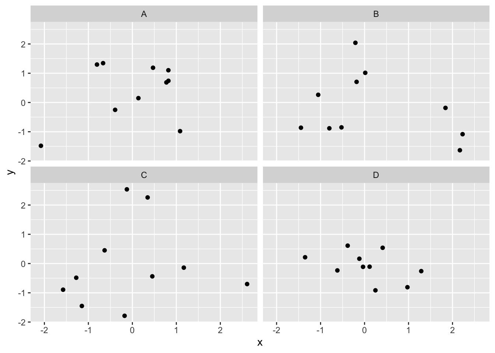
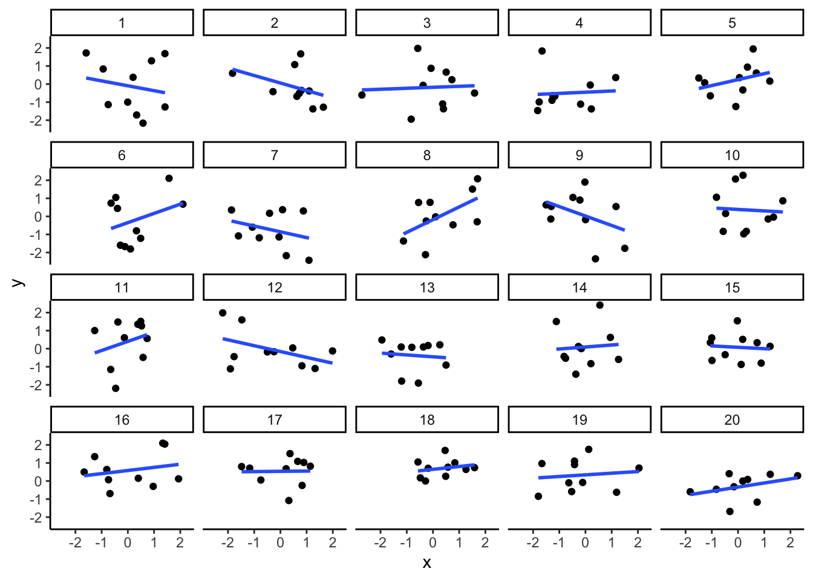
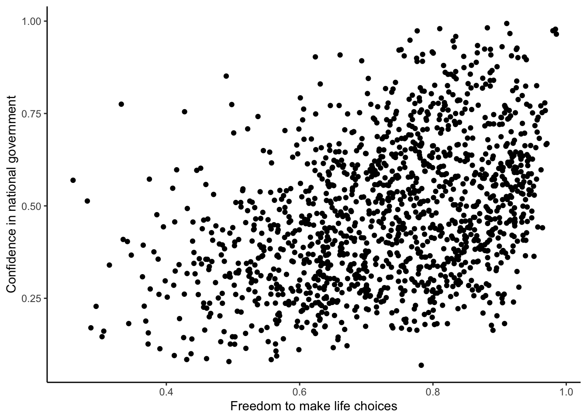
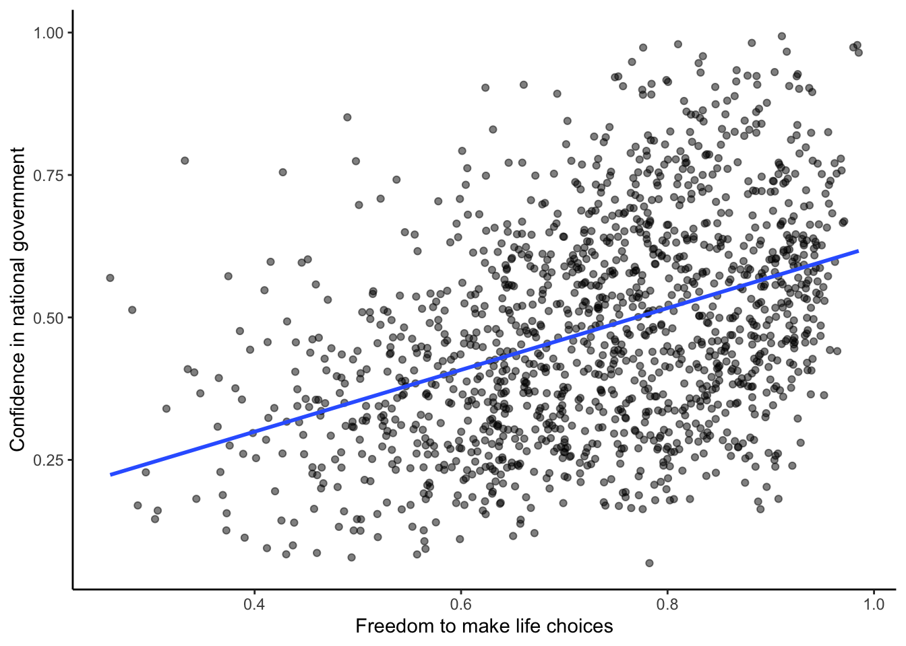
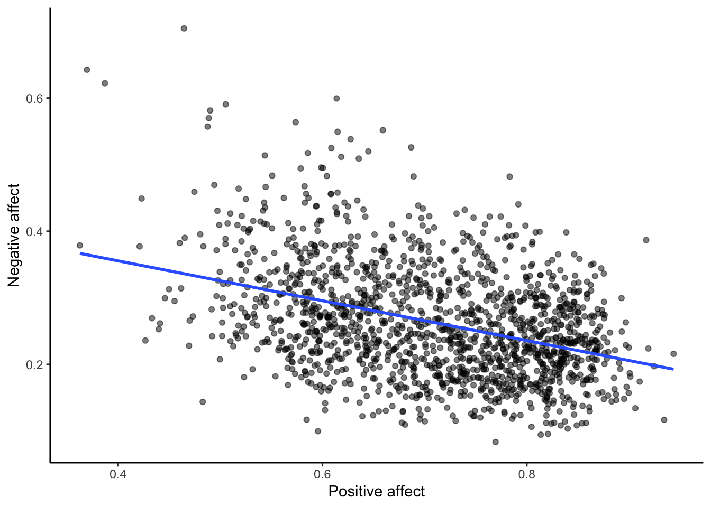

3 Week 3: Correlation and Causation
If … we choose a group of social phenomena with no antecedent knowledge of the causation or absence of causation among them, then the calculation of correlation coefficients, total or partial, will not advance us a step toward evaluating the importance of the causes at work. —Sir Ronald Fisher
In lecture and in the textbook, we have been discussing the idea of correlation. This is the idea that two things that we measure can be somehow related to one another. For example, your personal happiness, which we could try to measure say with a questionnaire, might be related to other things in your life that we could also measure, such as number of close friends, yearly salary, how much chocolate you have in your bedroom, or how many times you have said the word Nintendo in your life. Some of the relationships that we can measure are meaningful, and might reflect a causal relationship where one thing causes a change in another thing. Some of the relationships are spurious, and do not reflect a causal relationship.
In this lab you will learn how to compute correlations between two variables in software, and then ask some questions about the correlations that you observe.
3.1 General Goals
- Compute Pearson’s r between two variables using software
- Discuss the possible meaning of correlations that you observe
3.1.1 Important Info
We use data from the World Happiness Report. A .csv of the data can be found here: WHR2018.csv
3.2 R
In this lab we use explore to explore correlations between any two variables, and also show how to do a regression line. There will be three main parts. Getting R to compute the correlation, and looking at the data using scatter plots. We’ll look at some correlations from the World Happiness Report. Then you’ll look at correlations using data we collect from ourselves. It will be fun.
3.2.1 cor for correlation
R has the cor function for computing Pearson’s r between any two variables. In fact this same function computes other versions of correlation, but we’ll skip those here. To use the function you just need two variables with numbers in them like this:
## [1] 0.76539Well, that was easy.
3.2.1.1 scatterplots
Let’s take our silly example, and plot the data in a scatter plot using ggplot2, and let’s also return the correlation and print it on the scatter plot. Remember, ggplot2 wants the data in a data.frame, so we first put our x and y variables in a data frame.
Wow, we’re moving fast here.
3.2.1.2 lots of scatterplots
Before we move on to real data, let’s look at some fake data first. Often we will have many measures of X and Y, split between a few different conditions, for example, A, B, C, and D. Let’s make some fake data for X and Y, for each condition A, B, C, and D, and then use facet_wrapping to look at four scatter plots all at once

3.2.1.3 computing the correlations all at once
We’ve seen how we can make four graphs at once. Facet_wrap will always try to make as many graphs as there are individual conditions in the column variable. In this case there are four, so it makes four.
Notice, the scatter plots don’t show the correlation (r) values. Getting these numbers on there is possible, but we have to calculate them first. We’ll leave it to you to Google how to do this, if it’s something you want to do. Instead, what we will do is make a table of the correlations in addition to the scatter plot. We again use dplyr to do this:
OK, we are basically ready to turn to some real data and ask if there are correlations between interesting variables…You will find that there are some… But before we do that, we do one more thing. This will help you become a little bit more skeptical of these “correlations”.
3.2.1.4 Chance correlations
As you learned from the textbook. We can find correlations by chance alone, even when there is no true correlation between the variables. For example, if we sampled randomly into x, and then sampled some numbers randomly into y. We know they aren’t related, because we randomly sampled the numbers. However, doing this creates some correlations some of the time just by chance. You can demonstrate this to yourself with the following code. It’s a repeat of what we already saw, jut with a few more conditions added. Let’s look at 20 conditions, with random numbers for x and y in each. For each, sample size will be 10. We’ll make the fake data, then make a big graph to look at all. And, even though we get to regression later in the lab, I’ll put the best fit line onto each scatter plot, so you can “see the correlations”.

You can see that the slope of the blue line is not always flat. Sometimes it looks like there is a correlation, when we know there shouldn’t be. You can keep re-doing this graph, by re-knitting your R Markdown document, or by pressing the little green play button. This is basically you simulating the outcomes as many times as you press the button.
The point is, now you know you can find correlations by chance. So, in the next section, you should always wonder if the correlations you find reflect meaningful association between the x and y variable, or could have just occurred by chance.
3.2.2 World Happiness Report
Let’s take a look at some correlations in real data. We are going to look at responses to a questionnaire about happiness that was sent around the world, from the world happiness report
3.2.2.1 Load the data
We load the data into a data frame. Reminder, the following assumes that you have downloaded the RMarkdownsLab.zip file which contains the data file in the data folder.
You can also load the data using the following URL
3.2.2.2 Look at the data
You should be able to see that there is data for many different countries, across a few different years. There are lots of different kinds of measures, and each are given a name. I’ll show you some examples of asking questions about correlations with this data, then you get to ask and answer your own questions.
3.2.2.3 My Question #1
For the year 2017 only, does a countries measure for “freedom to make life choices” correlate with that countries measure for " Confidence in national government"?
Let’s find out. We calculate the correlation, and then we make the scatter plot.
## [1] NA
Interesting, what happened here? We can see some dots, but the correlation was NA (meaning undefined). This occurred because there are some missing data points in the data. We can remove all the rows with missing data first, then do the correlation. We will do this a couple steps, first creating our own data.frame with only the numbers we want to analyse. We can select the columns we want to keep using select. Then we use filter to remove the rows with NAs.
## [1] 0.4080963Now we see the correlation is .408.
Although the scatter plot shows the dots are everywhere, it generally shows that as Freedom to make life choices increases in a country, that countries confidence in their national government also increase. This is a positive correlation. Let’s do this again and add the best fit line, so the trend is more clear, we use geom_smooth(method=lm, se=FALSE). I also change the alpha value of the dots so they blend it bit, and you can see more of them.
## [1] 0.4080963
3.2.2.4 My Question #2
After all that work, we can now speedily answer more questions. For example, what is the relationship between positive affect in a country and negative affect in a country. I wouldn’t be surprised if there was a negative correlation here: when positive feelings generally go up, shouldn’t negative feelings generally go down?
To answer this question, we just copy paste the last code block, and change the DVs to be Positive affect, and Negative affect
## [1] -0.3841123
Bam, there we have it. As positive affect goes up, negative affect goes down. A negative correlation.
3.2.3 Generalization Exercise
This generalization exercise will explore the idea that correlations between two measures can arise by chance alone. There are two questions to answer. For each question you will be sampling random numbers from uniform distribution. To conduct the estimate, you will be running a simulation 100 times. The questions are:
Estimate the range (minimum and maximum) of correlations (using pearons’s r) that could occur by chance between two variables with n=10.
Estimate the range (minimum and maximum) of correlations (using pearons’s r) that could occur bychance between two variables with n = 100.
Use these tips to answer the question.
Tip 1: You can use the runif() function to sample random numbers between a minimum value, and maximum value. The example below sample 10 (n=10) random numbers between the range 0 (min = 0) and 10 (max=10). Everytime you run this code, the 10 values in x will be re-sampled, and will be 10 new random numbers
Tip 2: You can compute the correlation between two sets of random numbers, by first sampling random numbers into each variable, and then running the cor() function.
## [1] -0.0742583Running the above code will give different values for the correlation each time, because the numbers in x and y are always randomly different. We might expect that because x and y are chosen randomly that there should be a 0 correlation. However, what we see is that random sampling can produce “fake” correlations just by chance alone. We want to estimate the range of correlations that chance can produce.
Tip 3: One way to estimate the range of correlations that chance can produce is to repeat the above code many times. For example, if you ran the above code 100 times, you could save the correlations each time, then look at the smallest and largest correlation. This would be an estimate of the range of correlations that can be produced by chance. How can you repeat the above code many times to solve this problem?
We can do this using a for loop. The code below shows how to repeat everything inside the for loop 100 times. The variable i is an index, that goes from 1 to 100. The saved_value variable starts out as an empty variable, and then we put a value into it (at index position i, from 1 to 100). In this code, we put the sum of the products of x and y into the saved_value variable. At the end of the simulation, the save_value variable contains 100 numbers. The min() and max() functions are used to find the minimum and maximum values for each of the 100 simulations. You should be able to modify this code by replacing sum(x*y) with cor(x,y). Doing this will allow you to run the simulation 100 times, and find the minimum correlation and maximum correlation that arises by chance. This will be estimate for question 1. To provide an estimate for question 2, you will need to change n=10 to n=100.
## [1] 69.94595## [1] 457.71343.2.4 Writing assignment
Answer the following questions with complete sentences. When you have finished everything. Knit the document and hand in your stuff (you can submit your .RMD file to blackboard if it does not knit.)
Imagine a researcher found a positive correlation between two variables, and reported that the r value was +.3. One possibility is that there is a true correlation between these two variables. Discuss one alternative possibility that would also explain the observation of +.3 value between the variables.
Explain the difference between a correlation of r = .3 and r = .7. What does a larger value of r represent?
Explain the difference between a correlation of r = .5, and r = -.5.